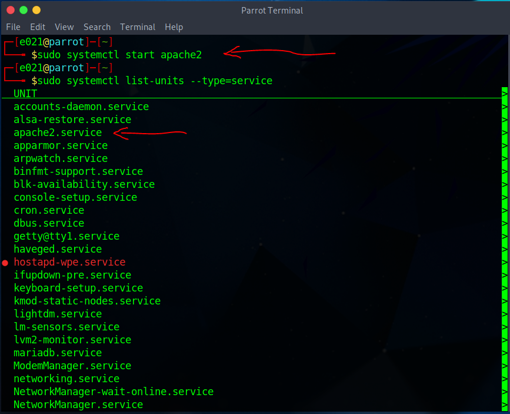

Administração de servidores
Um aspecto importante da administração de servidores no Linux é a configuração de servidores web. Neste caso, abordaremos a configuração do servidor web Apache, um dos servidores web mais populares e amplamente utilizado.

Configuração de servidores web (Apache)
O Apache é um servidor web de código aberto que permite hospedar e servir páginas da web. Aqui estão alguns passos básicos para configurar o servidor web Apache no Linux:
Instalação do Apache:
No Ubuntu e outras distribuições baseadas no Debian, você pode usar o comando sudo apt install apache2 apache2-utils apache2-doc para instalar o Apache. No CentOS e outras distribuições baseadas no Red Hat, você pode usar o comando sudo yum install httpd para instalar o Apache, como já ensinamos no Módulo 3: Gerenciamento de pacotes.
Inicialização e habilitação do Apache:
Após a instalação, você pode iniciar o Apache usando o comando sudo systemctl start apache2 (ou sudo systemctl start httpd em distribuições baseadas no Red Hat). Para verificar se realmente funcionou utilize o comando systemctl list-units --type=service e o serviço deverá aparecer, ensinamos sobre serviços e seus comandos no Módulo 4: Administração do sistema. Para habilitar o Apache a iniciar automaticamente na inicialização do sistema, use o comando sudo systemctl enable apache2 (ou sudo systemctl enable httpd no Red Hat).
Configuração do diretório raiz do servidor:
O diretório raiz do servidor web é onde os arquivos e páginas da web são armazenados. O diretório padrão no Apache é /var/www/html, que é onde o site é armazenado. Você pode modificar esse diretório editando o arquivo de configuração principal do Apache. No Ubuntu, o arquivo é /etc/apache2/apache2.conf, e no CentOS é /etc/httpd/conf/httpd.conf. Procure pela diretiva DocumentRoot e altere o caminho para o diretório desejado. Lembre-se de ajustar as permissões de arquivo e diretório adequadamente.
Configuração de hosts virtuais:
Os hosts virtuais permitem que você hospede vários sites em um único servidor. No Apache, os hosts virtuais são configurados por meio de arquivos de configuração separados. No Ubuntu, você pode criar um arquivo de configuração para cada host virtual no diretório /etc/apache2/sites-available/. No CentOS, você pode criar arquivos de configuração no diretório /etc/httpd/conf.d/. Certifique-se de configurar corretamente o nome do servidor, o diretório raiz, as permissões e outros parâmetros necessários para cada host virtual.
O seu arquivo .conf deverá ficar mais ou menos assim.